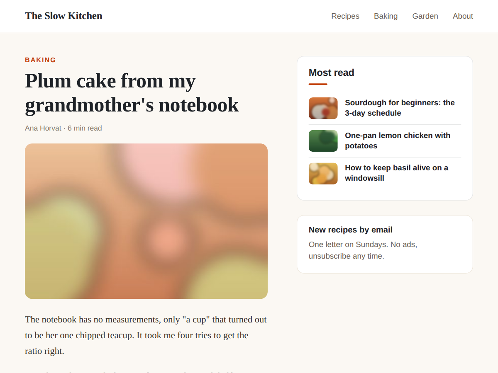

Most Read
Show your popular blog posts, ranked by views
- Popular posts ranked by real views
- Updates by itself, nothing to pin by hand
- Fits a sidebar, footer or any page section
- Rank by likes or comments, up to 10 (Premium)

What it does
Most Read shows your blog's most popular posts on any page of your site, ranked by how many times each post has been read. Put it in a sidebar, under an article or in the footer, and new readers find your best posts first.
The order comes from your blog's own view totals, so you never pin or sort anything by hand. When a post starts getting more readers, it moves up the list. The list is refreshed every 10 minutes.
Each post shows its title and cover picture and links straight to the post. You can write your own title for the list, hide the pictures, and match colours and font to your site. On a new blog with no views yet, the list shows your newest posts until readers arrive.
The dashboard page shows your current top 10 with views, likes and comments side by side, so you can see what your readers like without opening every post.
The free plan shows your top 3 posts by views in a list with pictures. Premium shows up to 10 posts, ranks them by likes or comments as well as views, keeps a list to one category, shows the count next to each post, and adds numbered and card styles.
The widget does not track visitors or set cookies. It reads totals your blog already keeps.
Price
Free
- Your top 3 posts by views
- List with cover pictures
- Your title, colours and font
- No branding on your site
Premium
$4/month, or yearly with 20% off
- Up to 10 posts
- Rank by views, likes or comments
- One category per list
- View counts, numbered and card styles